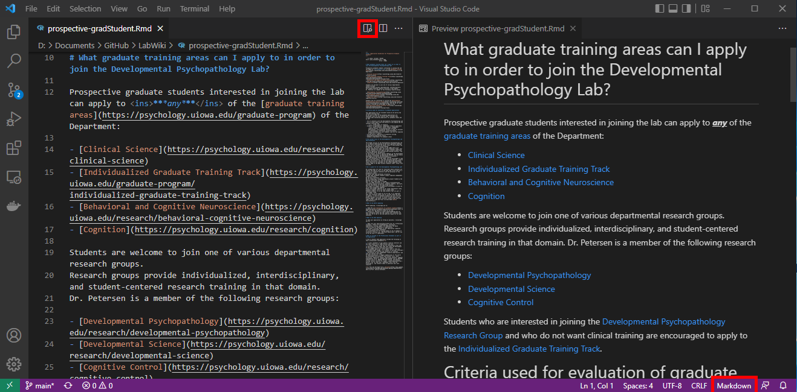

Code
summary(cars) speed dist
Min. : 4.0 Min. : 2.00
1st Qu.:12.0 1st Qu.: 26.00
Median :15.0 Median : 36.00
Mean :15.4 Mean : 42.98
3rd Qu.:19.0 3rd Qu.: 56.00
Max. :25.0 Max. :120.00 This is an Quarto document that is written using Markdown. Markdown is a simple formatting syntax for authoring HTML, PDF, and MS Word documents. For more details on using R Markdown see https://rmarkdown.rstudio.com (archived at https://perma.cc/4MP3-5RT8). For more details on using Quarto, see https://quarto.org.
You can embed an R code chunk like this:
```{r}
summary(cars)
```summary(cars) speed dist
Min. : 4.0 Min. : 2.00
1st Qu.:12.0 1st Qu.: 26.00
Median :15.0 Median : 36.00
Mean :15.4 Mean : 42.98
3rd Qu.:19.0 3rd Qu.: 56.00
Max. :25.0 Max. :120.00 https://www.rstudio.com/wp-content/uploads/2015/03/rmarkdown-reference.pdf (archived at https://perma.cc/8P7X-9XPV)
Adapted from here (archived at https://perma.cc/P75L-3UM9):
". " → ". " Be careful not to blanket remove all double spaces because tabbed bullets have 3 spaces..Rmd file (or to README.md)Visual Studio Code or Positron to edit the Lab Wiki, you can view the source code side-by-side with the markdown Preview (after selecting the code type as markdown): 
1. for all numbers. Markdown will make them sequential automatically. This is helpful if you go back and add additional entries later.', ") rather than curly quotes (‘, ’, “, ”). Curly quotes are often inserted when copying and pasting from other sources (e.g., Word documents, websites), so make sure to convert them to straight quotes."[XXX]" to indicate an area that needs editing. This will allow the lab to CTRL+F for "[XXX]" and find areas that need editing.R packages that are installed for running the .Rmd files, update the DESCRIPTION file.\\lc-rs-store24.hpc.uiowa.edu\lss_itpetersen\Lab\Studies\) rather than paths relative to a particular mapped drive letter (which can differ from computer to computer; (i.e., Z:\Lab\Studies\)).To update the lab wiki, perform the following steps:
GitHub repo on your local machine:) Clone the GitHub repo to your local machine..Rmd files using RStudio or Visual Studio Code..html files locally (in a folder called _site) by running the following command:
.html files look correct, commit the changes.GitHub repo. After pushing the changes to the GitHub repo, GitHub Actions will automatically re-run the code and deploy the updated website, assuming there were no errors. You can track the workflow for errors here: https://github.com/DevPsyLab/LabWiki/actions.For more information about Quarto and rmarkdown that were used to generate the site, see the following links:
You can create/edit R Markdown (.Rmd) files with the following free software:
If you use Visual Studio Code to create/edit .Rmd documents, you can view the source code side-by-side with the markdown Preview (after selecting the code type as markdown):
Add a new chunk by clicking the Insert Chunk button on the toolbar or by pressing Ctrl+Alt+I.
You can execute a code chunk in an R Markdown Notebook by clicking the Run button within the chunk or by placing your cursor inside it and pressing Ctrl+Shift+Enter. To run more than one code chunk, you have several options:
When you click the Knit button, a document will be generated that includes both content as well as the output of any embedded Rcode chunks within the document.
When you save the computational notebook (.Rmd), an HTML (.html) file containing the code and output will be saved alongside it (click the Preview button or press Ctrl+Shift+K to preview the HTML file).
The preview shows you a rendered HTML copy of the contents of the editor. Consequently, unlike Knit, Preview does not run any R code chunks. Instead, the output of the chunk when it was last run in the editor is displayed.
Computational notebooks are valuable for sharing your code, output, figures, and interpretive text all in-line in a reproducible format. For more information on the value of computational notebooks, see the article titled “The Scientific Paper Is Obsolete” (https://www.theatlantic.com/science/archive/2018/04/the-scientific-paper-is-obsolete/556676/; archived at https://perma.cc/XHW4-K89V)“.
You can use a Quarto document (.qmd) or an R Markdown Notebook (.Rmd) to create a computational notebook. Quarto is more recent/advanced than R Markdown and is generally preferred.
For more information about Quarto documents, see here:
For more information about how to create R Notebooks, see here:
For more information about how to create Quarto
Consistent with the Petersen Lab template for how to structure your repo, you should have two computational notebooks: 1) a “Prepare Data” script (prepareData.qmd or prepareData.Rmd) and 2) a “Computational Notebook” script (computationalNotebook.qmd or computationalNotebook.Rmd). The “Prepare Data” script is used to update the data file by re-exporting, merging, re-running calculations, etc. This script should be separate from the “Computational Notebook” file that is used for running analyses on the data. Every time you run the “Computational Notebook” file with the exact same data, you should get the exact same findings (i.e., reproducibility). Thus, we keep the “Prepare Data script” separate from the “Computational Notebook” file so that you update the data only when you intend to.
When creating a computational notebook, follow the structure of the computational notebooks in the Petersen Lab template.
To use the lab templates for the “Prepare Data” and “Computational Notebook” scripts, first install the petersenlab package. Then, in RStudio, select “File” > “New File” > “Quarto Document” or “R Markdown”. Then, select “From Template”, and select either the “prepareData” or “computationalNotebook” template.
If you want to create a Quarto document computational notebook manually (instead of using the lab template), create a .qmd file with the following YAML header at the top of the file:
---
---
title: "INSERT TITLE"
author: "INSERT AUTHOR NAME(S)"
date: 'October 09, 2026'
format:
html:
toc: true
toc-depth: 4
number-sections: true
number-depth: 4
code-fold: show
echo: true
error: true
embed-resources: true
self-contained-math: true
---Then, include whatever text and/or code chunks.
R Markdown NotebookIf you want to create an R Markdown notebook computational notebook manually (instead of using the lab template), create a .Rmd file with the following YAML header at the top of the file:
---
title: "INSERT TITLE"
author: "INSERT AUTHOR NAME(S)"
date: "`r format(Sys.time(), '%d %B, %Y')`"
output:
html_document:
toc: true
toc_depth: 4
toc_float: true
number_sections: true
code_folding: show
df_print: paged
---If this is your “Computational Notebook” script, include the following as the first code chunk:
```{r setup, include = FALSE}
knitr::opts_chunk$set(
echo = TRUE, # print code
error = TRUE # do not interrupt in case of errors
)
# Use for higher quality figures on Windows devices
trace(grDevices::png, quote({
if (missing(type) && missing(antialias)) {
type <- "cairo-png"
antialias <- "subpixel"
}
}), print = FALSE)
```If this is your “Prepare Data” script, include the following as the first code chunk:
```{r setup, include = FALSE}
knitr::opts_chunk$set(
echo = TRUE # print code
)
```Then, include whatever text and/or code chunks.
Personalized commands can be created in Visual Code through the CSS file within the Wiki folder. To create a new CSS command:
In Visual Studio Code, open the css tab within the Wiki Folder
Open the # srs.css file under the css tab
Enter in your personalized command according to the following structure:
COMMAND_NAME {
command-specification1: value1;
command-specification2: value2;
command-specification3: value3;
quotes: """ """ "‘" "'";
}font-size: Value = percentage
font-size: 150%
font-style: Value = bold, italic, underline
font-style: bold, font-style: italic
color: Value = color name or color code
color: green, color: #0e6b1c
COMMAND_NAME:before { content: open-quote; } COMMAND_NAME:after { content: close-quote; }
example {
font-size: 150%;
font-style: italic;
color:#C800FC;
quotes: """ """ "‘" "'";
}
example:before { content: open-quote; }
example:after { content: close-quote; }rmarkdown/Quarto Website using GitHub Actions
Quarto markdown files use the .qmd extension, whereas rmarkdown files use the .rmd extension.
GitHub repo under the DevPsyLab organization in GitHubrmarkdown: https://github.com/DevPsyLab/MarkdownWebsite
Quarto: https://github.com/DevPsyLab/QuartoWebsite
If you do not create the repository from a template, the steps for creating the repo manually are below:
README.md file
.gitignore file
gh-pages
gh-pages branchgh-pages branch):
/.github/workflows/deploy_markdown.yml file
GitHub Actions was steps to runrmarkdown:
Quarto:
YAML file—this file creates the navbar:
rmarkdown:
_site.yml fileQuarto:
_quarto.yml fileLICENSE file
DESCRIPTION file
GitHub Actions what R packages to install.Rmd file (for rmarkdown) or .qmd file (for Quarto)font, images, and includes
includes contains css files, javascript files, footers, and Google Analyticsrmarkdown website is intended to be public, create a new Google Analytics property, and replace the URL and gtag in the google_analytics.html fileGitHub
GitHub Pages:
GitHub Pages (Settings > Pages)
gh-pages/root
The lab template for an APA-style Quarto open access manuscript is located at the following location: https://github.com/DevPsyLab/QuartoManuscript. This manuscript that is generated from this template codebase is posted at the following link: https://devpsylab.github.io/QuartoManuscript/.
Examples:
To prevent code from re-running unless code is altered:
execute:
freeze: autoIf you get the following error in GitHub Actions:
remote: Permission to GITHUB_USERNAME/REPO_NAME.git denied to github-actions[bot].
fatal: unable to access 'https://github.com/GITHUB_USERNAME/REPO_NAME.git/': The requested URL returned error: 403Check if “Read and write permissions” are enabled in Settings -> Actions -> General -> Workflow permissions: https://stackoverflow.com/a/75308228/2029527 (archived at https://perma.cc/R57Z-9JUS)
You can embed plots, for example:
```{r, echo = FALSE}
plot(pressure)
```Note that the echo = FALSE parameter was added to the code chunk to prevent printing of the R code that generated the plot.
When creating a heading, make sure that the heading label begins with the prefix sec- (e.g., {#sec-headingLabel}).
# Headings {#sec-heading-label1}
## Subheading {#sec-heading-label2}
### Subsubheading {#sec-heading-label3}
#### Subsubsubheading {#sec-heading-label4}To add another element in a list while preserving the continuity of the list, indent the element four spaces or one tab.
To create an unordered list, add a dash (-) in front of line items. Adding an asterisk (*) or plus sign (+) in front of line items will also create an unordered list; however, the lab convention is to use dashes for unordered lists. We use asterisks for adding emphasis to text.
- one item
- one item
- one item
- one more item
- one more item
- one more item
- lower level
- sub-item 1
- sub-item 2- <input type="checkbox" unchecked> Box 1</input>
- <input type="checkbox" checked> Box 2</input>1. the first item
1. test
1. test
1. new test
1. new test
1. the second item
1. test
1. test
1. the third item
- one unordered item
- subitem
- one unordered item
1. fourth item
1. test
1. test
1. test> Dorothy followed her through many of the beautiful rooms in her castle.
>
> Continued...Dorothy followed her through many of the beautiful rooms in her castle.
Continued…
```markdown
[This is how to write a hidden comment in Markdown.]: #
```
[This comment will be hidden.]: # [This is how to write a hidden comment in Markdown.]: # <!-- This text will be hidden -->
<!--
This multiline
text comment will be
hidden
-->This text is **bolded text**.
This text is *italicized text*.
This text is ***bolded and italicized text***.
This text is <mark>highlighted text</mark>.
This text is <mark style="background-color: lightblue">highlighted text in a different color</mark>.
This text is `unicode text`.
This text is <code><i>code in italics;</i> this text is <b>code in bold</b></code>.
This text is ~~strikethrough text~~.
This text <u>will be underlined</u>; this text <ins>will also be underlined</ins>.
<font color="red">This text is red!</font>This text is bolded text. This text is italicized text. This text is bolded and italicized text. This text is highlighted text. This text is highlighted text in a different color. This text is unicode text. This text is code in italics; this text is code in bold. This text is strikethrough text. This text will be underlined; this text will also be underlined. This text is red!
For underlining text, the lab convention is to use: <u>text to be underlined</u>.
<center>This text is centered.</center>To use syntax highlighting to display code without running the code:
```r
summary(cars)
```summary(cars)or
::: {.cell}
```{.r .cell-code}
`r ''`
summary(cars)
```
:::summary(cars)or
summary(cars)which yields:
summary(cars)Inline:
This is the formula: \(x = y + 5\). Solve for \(x\).
Separate line:
$$
y = \frac{x}{7} \cdot 4 + 3 \times 2 - 1_{a1}/2^{1c/2} \dots
$$\[ y = \frac{x}{7} \cdot 4 + 3 \times 2 - 1_{a1}/2^{1c/2} \dots \]
To link to a heading that is in the same wiki, make sure the heading has a label (e.g., {#sec-label}), as shown here. Then, link to the heading with the following syntax: [text to show](#sec-label). For example, to link to the links section, you would specify: [text to show](#sec-links). If the heading is on a different page of the same wiki, specify the html file before the label, e.g.: [text to show](dataManagement.qmd#sec-saveData). If the heading is on a different page of a different wiki, specify the full path before the label, e.g.: [text to show](https://devpsylab.github.io/LabWiki/manual.html#basicsLab). Do not use the website-derived link for a given heading because it is not a stable link; the heading path can change if other headings are added.
[I'm an inline-style link](https://www.google.com)
[I'm an inline-style link with title](https://www.google.com "Google's Homepage")
[I'm a reference-style link][Arbitrary case-insensitive reference text]
[I'm a relative reference to a repository file](../blob/master/LICENSE)
[You can use numbers for reference-style link definitions][1]
[I am a link to another file in this project](pca.qmd#sec-overview)
[I'm a link within this document](#sec-headings)
[I'm a link that opens in a new tab](https://example.com){target="_blank"}
URLs in angle brackets will automatically get turned into links.
<http://www.example.com>
Some text to show that the reference links can follow later.
[arbitrary case-insensitive reference text]: <https://www.mozilla.org>
[1]: <https://slashdot.org/>
[](https://developmental-psychopathology.lab.uiowa.edu/)I’m an inline-style link with title
I’m a relative reference to a repository file
You can use numbers for reference-style link definitions
I am a link to another file in this project
I am a link to another file in this project
I’m a link within this document
I’m a link that opens in a new tab
URLs and URLs in angle brackets will automatically get turned into links. http://www.example.com or http://www.example.com
Some text to show that the reference links can follow later.
Link from an image:

Here is a simple footnote[^1].
A footnote can also have multiple lines[^2].
You can also use words, to fit your writing style more closely[^note].
[^1]: My reference.
[^2]: Every new line should be prefixed with 2 spaces.
This allows you to have a footnote with multiple lines.
[^note]:
Named footnotes will still render with numbers instead of the text but allow easier identification and linking.
This footnote also has been made with a different syntax using 4 spaces for new lines.Here is a simple footnote1.
A footnote can also have multiple lines2.
You can also use words, to fit your writing style more closely3.
- degree: (°) °- left arrow: ← ←
- upward arrow: ↑ ↑
- right arrow: → →
- downward arrow: ↓ ↓- hyphen: -
- en dash: –
- em dash: —H~2O
X^2H~2O
X^2
H<sub>2</sub>O
X<sup>2</sup>H2O
X2
term
: definition- [x] Create the website
- [ ] Conduct the study
- [ ] Write it up| Syntax | Description |
| ----------- | ----------- |
| Header | Title |
| Paragraph | First paragraph. <br><br> Second paragraph. |
| Syntax | Description |
| ----------- | ----------- |
| Header | Title |
| List | Here's a list! <ul><li>Item one.</li><li>Item two.</li></ul> || Syntax | Description |
|---|---|
| Header | Title |
| Paragraph | First paragraph. Second paragraph. |
| Syntax | Description |
|---|---|
| Header | Title |
| List | Here’s a list! |
You can easily create tables in Markdown from an Excel or csv file using the following website: https://www.tablesgenerator.com/markdown_tables (archived at https://perma.cc/53TQ-DQJ9)
To cross-reference a table, add a caption below the table, then include a #tbl- label in braces at the end of the caption. For example:
| Col1 | Col2 | Col3 |
|------|------|------|
| A | B | C |
| E | F | G |
| A | G | G |
: My Caption {#tbl-letters}
See @tbl-letters.Note:: When creating dropdown menus, it is important to have spaces between font breaks </font>. Without these breaks, Markdown cannot detect how to
<details>
<summary>**<font size = "6">This is a dropdown menu**</summary>
<font size = "4">
Insert Text Here
</font>
</details>This is a dropdown menu
Insert Text Here
For instance:
To create a cross-reference to a figure, image followed by the caption inside the div:
::: {#fig-vsCode}

VS Code Example Image
:::
See @fig-vsCode.If the file is to be stored on a GitHub repo, the video file needs to be less than 50 MB. You may need to convert the video to a lower quality to make it smaller than 50 MB.
By contrast, if the file is to be stored on a GitLab repo (on the UI Enterprise version of GitLab), the file may be larger than 50 MB, but first make sure the repository is configured for large file storage. Follow the instructions here to do so.
A helpful example repository for embedding videos can be found here (archived at https://perma.cc/6RWF-PNR7)
<video width="100%" controls="" preload="none"> #video settings
<source src="images/lv2-saving-procedures.mp4" type="video/mp4"> #location and type of video
</video>PDF’s can be embedded within markdown documents. Make sure the document you wish to embed is in a local folder (if you are adding it to a Wiki document).
<embed src="path to file" width="1000" height="600">The below line of code will embed a html document in a markdown file. The best way to configure formatting for this is still in progress.
Note: The htmltools package will need to be installed as a package dependency
htmltools::includeHTML("path to html file")The process of converting word documents to Markdown is aided by having knowledge of the best practices steps.
To convert documents, follow these steps:
Ctrl f
.
Replace line, type Ctrl Enter to create a new line.. that should not be removed.Handbrake can be used to lower video quality, and convert files to .mp4 format, in order for them to be incorporated into the wiki. It is important to lower the quality (i.e., file size) of videos so that we do not exceed the 1gb file size limit on any given repo.
video tab and lower the Constant Quality to 30, and the Framerate (FPS): to 20
My reference.↩︎
Every new line should be prefixed with 2 spaces.
This allows you to have a footnote with multiple lines.↩︎
Named footnotes will still render with numbers instead of the text but allow easier identification and linking.
This footnote also has been made with a different syntax using 4 spaces for new lines.↩︎